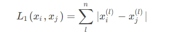
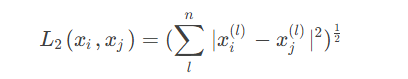
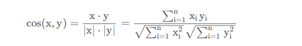

1.概述
k-近邻算法采用测量不同特征值之间的距离方法进行分类。
2.流程：k-近邻算法的一般流程
(1) 收集数据：可以使用任何方法。
(2) 准备数据：距离计算所需要的数值，最好是结构化的数据格式。
(3) 分析数据：可以使用任何方法。
(4) 测试算法：计算错误率。
(5) 使用算法：首先需要输入样本数据和结构化的输出结果，然后运行k-近邻算法判定输入数据分别属于哪个分类，最后应用对计算出的分类执行后续的处理。
3.数据处理-归一化处理
归一化处理：一般是将数值控制在-11或者01之间
公式：newValue = （oldValue-min）/(max-min)
其中min和max分别是数据集中的最小特征值和最大特征值。
4.距离度量
（1）曼哈顿距离

（2）欧式距离

这两种是数值文本使用较多的距离度量方法
如果是文本数据，使用余弦来计算相似度就比以上两种方式更合适
（3）余弦距离

实现代码：
1
2
3
4
5
| import numpy as np
def CosineDistance(x, y):
x = np.array(x)
y = np.array(y)
return np.dot(x,y)/(np.linalg.norm(x)*np.linalg.norm(y))
|
几何中夹角余弦可用来衡量两个向量方向的差异，机器学习中借用这一概念来衡量样本向量之间的差异。相比距离度量，余弦相似度更加注重两个向量在方向上的差异，而非距离或长度上
5.实施KNN算法
对未知类别属性的数据集中的每个点依次执行以下操作：
（1）计算距离：给定测试对象，就按它与训练集中的每个对象的距离
（2）找最近：圈定距离最近的k个训练对象，作为测试对象的近邻
（3）做分类：根据k个近邻归属的主要类别，来对测试对象分类
6.实例：
分类器的实现
1
2
3
4
5
6
7
8
9
10
11
12
13
14
15
16
| def classify0(inX, dataSet, labels, k):
dataSetSize = dataSet.shape[0]
diffMat = tile(inX, (dataSetSize, 1)) - dataSet
sqDiffMat = diffMat ** 2
sqDistances = sqDiffMat.sum(axis=1)
distances = sqDistances ** 0.5
sortedDistIndicies = distances.argsort()
classCount = {}
for i in range(k):
voteIlabel = labels[sortedDistIndicies[i]]
classCount[voteIlabel] = classCount.get(voteIlabel, 0) + 1
sortedClassCount = sorted(classCount.iteritems(), key=operator.itemgetter(1), reverse=True)
return sortedClassCount[0][0]
|
使用sklearn实现kNN算法：
1
2
3
4
5
6
7
8
9
10
11
12
13
14
15
16
17
18
19
20
21
22
23
24
25
26
27
28
29
30
31
32
33
34
35
36
37
38
39
40
41
42
43
44
45
46
47
48
49
50
51
52
53
54
55
56
57
58
59
60
61
|
from sklearn import datasets
from sklearn.neighbors import KNeighborsClassifier
import numpy as np
np.random.seed(0)
iris=datasets.load_iris()
iris_x=iris.data
iris_y=iris.target
indices = np.random.permutation(len(iris_x))
iris_x_train = iris_x[indices[:-10]]
iris_y_train = iris_y[indices[:-10]]
iris_x_test = iris_x[indices[-10:]]
iris_y_test = iris_y[indices[-10:]]
knn = KNeighborsClassifier()
knn.fit(iris_x_train, iris_y_train)
iris_y_predict = knn.predict(iris_x_test)
probility=knn.predict_proba(iris_x_test)
neighborpoint=knn.kneighbors(iris_x_test[-1:],5,False)
score=knn.score(iris_x_test,iris_y_test,sample_weight=None)
print('iris_y_predict = ')
print(iris_y_predict)
print('iris_y_test = ')
print(iris_y_test)
print('Accuracy:', score)
print('neighborpoint of last test sample:', neighborpoint)
print('probility:', probility)
|